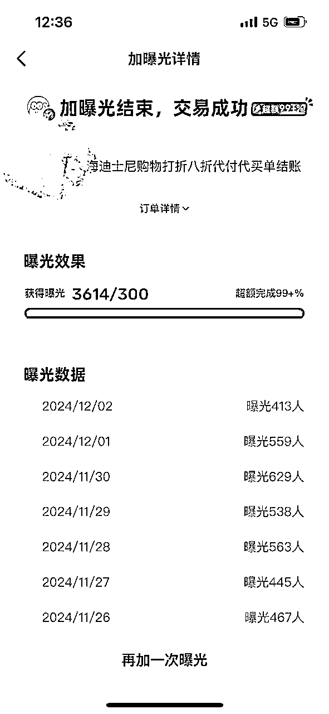

来源：https://tcnmxx4btxzv.feishu.cn/docx/FawedsZjoo3vDrxw6vScePAgnzf
大家好，我是大白，一名互联网自由职业者，加入生财有术不到一年的时间。
去年尝试摸索闲鱼平台虚拟电商主要做迪士尼代结帐业务，运营三个账号，其中一个账号单日收入最高破2000。
主要分前端负责引流，后端买手进行服务交付转化。顾客在闲鱼拍下定金后，我会在年卡群里咨询是否有人接单帮现场结账，有年卡用户回复接单意愿后拉入微信服务转化群对接顾客和买手。参考如下图：
迪士尼旅游顾客会在迪士尼各个商店购买迪士尼周边纪念品。年卡可以打八折，帮顾客买单结账打九折，从中间可以赚取一折差价利润。比如顾客购买1000元商品，利润为100元。顾客购买3000原价商品，利润为300元。假设一天单量20单，一单利润100，那么一天整体收入就是2000元（年卡买手分成前）。
去年年初被裁失业期间，一个机缘巧合的机会加入生财有术。刚加入感觉赚钱大佬如云各种年入百万的帖子看的我眼花缭乱。本着“想都是问题，做才是答案”的心法，躬身入局先入场弄脏双手参加了当时的闲鱼航海高客单项目。
为什么选择这个项目，因为第一门槛低金钱成本低，第二之前几年前有通过卖虚拟资料赚到过5000，但是后面因为闲鱼账号违规被封就不了了之。本以为自己会像武侠电影里的主角一样拥有主角光环，捡到一本武功秘籍一路开挂。但是整个航海结束没有在航海项目实现从0-1，反而是自己主号手机闲鱼发布的迪士尼代结帐相关的一直在出单。
自由职业创业也好，还是航海实战也罢，人一天的时间精力是有限的，大家都希望在正确的方向上发力。这个阶段经历着迷茫，迷茫是继续坚持做没有正反馈的闲鱼航海的项目，还是去做同样是闲鱼平台自己已经取得正反馈的闲鱼代结帐业务。后来跟一个朋友在聊天时问过这样一个问题，他说为什么不继续深入做自己已经取得正反馈的项目上。后面想明白了这一点就开始深入继续做迪士尼年卡代付业务。
做某一个项目之前需要调研分析市场需求，市场需求规模体量有多大，你能切多大的蛋糕，你的收入天花板才有多高。在闲鱼上根据几个关键字“迪士尼年卡八折代付”“迪士尼年卡代结帐”等关键字搜索相关做的好的对标同行账号动态，动态有每日出单单量，最近一个月内有一个链接连续7天以上出单且每天出单不少于5单则视为需求可以，时间过去有些久远，现以一个账号出单情况为例。如下图所示：
在商店内做过现场帮商店内顾客打折，平均一天8个小时能结账10单左右，有时候一个小时能拉三组顾客打折购物。如下图：
找到对标账号爆款链接之后可以把标题整理下来，比如：迪士尼购物，迪士尼打折，迪士尼年卡八折，迪士尼借卡购物，迪士尼代付，迪士尼代结帐等等，如下图：
这里标题中写八折（成本价）而不是九折，做到低价引流效果，文案中采用八折+费用。
参照对标账号的链接文案整理下来，重点写清楚收费详情（按照购物金额区间还是按照折扣），注意事项，使用流程，订金是否可退或者抵扣。如下图：
主要也是参照对标账号主图，或者从小红书上找商品图片，有机会实拍的也可以实拍。重点是清晰，干净，突出商品（公仔挂件），图片主体不要倾斜，尺寸采用16：9（更容易上推荐页，在手机显示屏中面积占比更大）。
主要也是参照对标账号链接，大部分定价在10-50，也就是标价代表为订金。
添加上面关键字标签，比如: 迪士尼代结帐，迪士尼代付。2-5个即可。
收货群一般是个人代购给收货黄牛（或淘宝代购店）出迪士尼商品时加入的群，一般他们会在群里发布收货清单，所以群里大部分是年卡用户且经常去迪士尼。如下图：
之前还可以，目前已经很少有人愿意帮买单。原因有二，第一目前迪士尼年卡大部分限额一年购物额度10w, 第二迪士尼规定不允许帮别人使用年卡，政策越来严格，比如出售商品胶带上会添加随机数字，导致目前买一次单必须用一张优惠券，而一周只有5张购物优惠券。那么一周优惠券数量相当紧张，比如一单原价1000，买手只能拿到利润50/单，5张优惠券用完也就拿到利润200左右。对于这些买手更倾向于把优惠券用在新品上新时或紧俏溢价的商品补货时用来购买，比如饼饼双肩包。
通过搜索迪士尼年卡代付根据当前最新日期找到年卡用户私信她如下:
一开始做这个项目是自己一个人负责闲鱼客户咨询接单同时自己做后端服务承接转化。每天的工作就是到了迪士尼最大的商店附近等单子。首先闲鱼上和顾客约定好购物时间和购物商店，提前在商店周围等待顾客，到了约定时间顾客选好商品商店内碰面帮顾客年卡打折。这个阶段一开始自我感觉还好，后面发现每天做着重复的劳动即接单和结账买单有些疲倦，开始思考能不能收入再翻倍。疲倦有二，一来自己不能从早上10点到晚上10点之间随时满足顾客购物时间需求，多个顾客同一时间段内购物买单结账会有冲突，同时多个顾客也可能不在同一个商店购物，来回跑多个商店如果不及时则会损失顾客，而且自己买单的时候由于没有及时回复闲鱼信息也会损失线上询单的顾客。二来天花板不高，想要做收入突破但是暂时一直也没想明白具体怎么做。这个阶段接单如下图：
转折：有一天晚上9点50左右，有个顾客说选好了商品原价大概2000元，但是我刚好本周的优惠券用完了，此时我灵机一动，不如把顾客转交给商店内别的打折同行，我看到角落一个还在眼观四周找寻打折顾客的打折黄牛，我告诉他我有一个顾客要买单，但是没有券了，你能帮她打折吗，他很爽快答应然后说差价分我一半，我内心暗爽，似乎压在内心的难题有了解答的方向。
有了单子派给商店内打折同行的想法，那么问题就来了，我从哪里去找那么多同行来帮我闲鱼接单的顾客买单。我首先想到了小红书平台，为什么选择小红书呢，一来上面很多个人的年卡用户在发帖子关于代结帐，二来这个平台上面很多85折，5:5分成之后年卡用户到手85折和自己接单差不多更乐意合作。那么我就开始通过小红书发帖找年卡合作用户（目前帖子有些久远已经删除），陆陆续续加了几个年卡合作用户到微信上。如下图：
当时就把这些有意愿合作的年卡用户拉入微信同一个群，闲鱼上有顾客咨询，我就在群里问有没有人来接单，有的话我就拉年卡用户和顾客组成群，由合作的年卡用户负责现场帮顾客买单，我只负责做流量接单子。这个阶段接单派单如下面：
服务交付群如下图：
按照上述2.0模式运行了一段时间，虽然每天都忙碌着回复客户信息和拉群分派单子，但是单量并没有实现质的跨越，离我的目标平均每天20单还有段距离，于是我想拉拢自己的亲朋好友一起来做。当时其实可以自己弄多个闲鱼账号自己一个人来搞，但是那样每天回复顾客信息也就是做客服的工作量会很大，同时也在考察一个小白是否从0-1可以做起来这块业务，以及为我后续做相关陪跑做尝试。首先我将手机相册里迪士尼商店商店照片上传网盘，供他们下载用来发布闲鱼链接图片。当然也可以从小红书上获取相关图片素材。同时我整理了如何发布闲鱼的培训文档，他们可以很快就上手发布闲鱼链接。
同时这个阶段也有几个问题显现出来
1 需要购物的比较临时的顾客多起来了，但是顾客需要买单的时间点没有一个买手在迪士尼。
解决：这个时候我就发在自己的几十个迪士尼代购群里，群里如果有人愿意接单帮我的顾客买单，我会把他和顾客拉入小群进行现场代结帐买单服务，同时把他拉入进来专门的代结帐买手接单群。
2 有时候确实没有迪士尼年卡用户在迪士尼
解决：那么这个时候我们采用洗单（此处有逃单风险通过拍闲鱼链接线上付款来解决）方式帮顾客打折，同时也能承接住特殊时间段需要打折的顾客。相关洗单话术如下图：
目前此种方式已经不适合了，因为迪士尼政策商品胶带的原因，胶带上有随机数字和原始购物小票上随机数字一直才可以退货退款。
3 有时候顾客不愿意走闲鱼拍定金
解决：那么我们则直接先添加顾客微信，直接在微信上实现服务交付，等到现场服务人员和顾客碰面时在要求顾客拍下闲鱼订金，如果顾客坚持不拍，那就不走闲鱼。
按照每天上新两个链接去测试主图，几个月后迎来了爆单。那几天发现同一个链接每天都会出几单，这个时候我就用闲鱼币推广，现在推广记录已经找不到太久之前的了，找一下比较靠前的推广记录：

每天咨询的顾客高峰100多个，线上拍了订金+没有付订金的最多有50单左右，由于大部分解散群聊或者退出，只展示部分。单日收入也突破了四位数。
接单派单流程优化：无用重复的客服工作找一个外包
供应商收入进阶：供应商年卡用户的分成谈低，因为自己单量大，又有赠品。很快就谈好了两个年卡用户，此时单日收入也差不多翻倍。
目前新手入局不难，做大的难度增加。想做这块业务的需要有大量稳定的年卡买手响应保障，目前很多买手都是兼职在做，随机的顾客购物时间响应速度上也是一个难点。
需要打折的顾客每天还是有的，从之前闲鱼高峰咨询顾客有三位数可以看出来。大部分还是年卡用户兼职在接单，由于打折券的限制市场并未饱和。除了上述也有其他方向比如迪士尼代点餐方向可以去做。